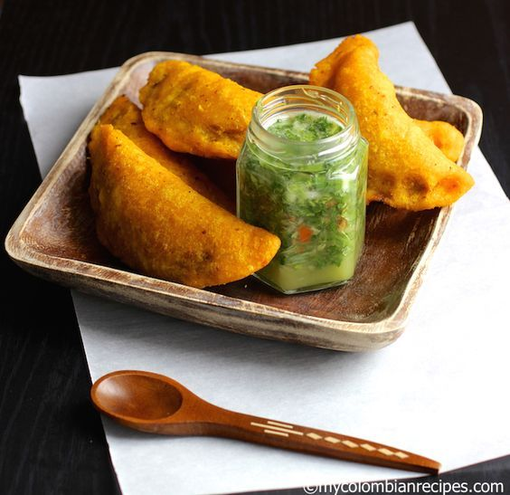

Empanadas

Description
These Colombian Empanadas are a popular snack in Colombia and are served by most Colombian restaurants in the USA. Traditionally, these delicious fritters are made with shredded pork and beef, but in my family we always make them with ground meat. Serve them with ají and lime wedges on the side.
Ingredients
- Vegetal oil for frying
- Aji and lime for serving
Dough
- 1 1/2 cups precooked yellow corn meal
- 2 cups water
- 1 tablespoon vegetal oil
- 1/2 tablespoon sazon Goya with azafran
- 1/2 teaspoon salt
Filling
- 2 cups peeled and diced white potatoes
- 1 chicken or vegetable bouillon cube
- 1 tablespoon olive oil
- 1/4 cup chopped white onions
- 1 cup chopped tomato
- 1/2 teaspoon salt
- 1/4 cup chopped green onions
- 1 chopped garlic clove
- 2 tablespoon chopped fresh cilantro
- 2 tablespoon chopped red bell pepper
- 1/4 teaspoon black pepper
- 1/2 pound ground pork and beef
Steps
- To prepare the dough: Place the corn meal in a large bowl. Add the sazon Goya and salt and stir to mix well. Add the water and oil and mix to form dough. Pat the dough into a ball and knead for 2 minutes or until smooth. Cover with plastic and set aside for 20 minutes.
- Meanwhile, to make the filling, cook the potatoes in a pot with water and the bouillon tablet for 20-25 minutes or until tender. Drain and gently mash the potatoes. Set aside.
- Heat 1 tablespoon olive oil in a large, heavy skillet. Add the onion and cook over medium-low heat stirring frequently, for 5 minutes. Add the tomatoes, green onions, garlic, bell pepper, cilantro, salt and black pepper. Cook for about 15 minutes.
- Add the ground pork and beef. Cook, breaking up the meat with a wooden spoon, for 10 to 15 minutes or until the mixture is fairly dry.
- Transfer the meat mixture to the mashed potatoes bowl and mix well to combine.
- Break small portions of the dough, about 1 ½ tablespoons each one, and form each portion into a ball by rolling between the palms of your hands.
- Place the balls of dough between two pieces of plastic and roll each out very thinly to form a circle. Remove the top plastic and place 1 tablespoon of the filling in the center of each.
- Then using the plastic underneath, fold the dough over to enclose the filling, forming a half circle. Tightly seal the edges by crimping with the tines of a fork.
- Fill a large pot with vegetable oil and heat over medium heat to 360° F.
- Carefully place 3 or 4 empanadas at the time in the heated oil and fry for about 2 minutes until golden on all sides.
- Using a slotted spoon transfer the empanadas to a plate lined with paper towels. Serve with ají and lime on the side.